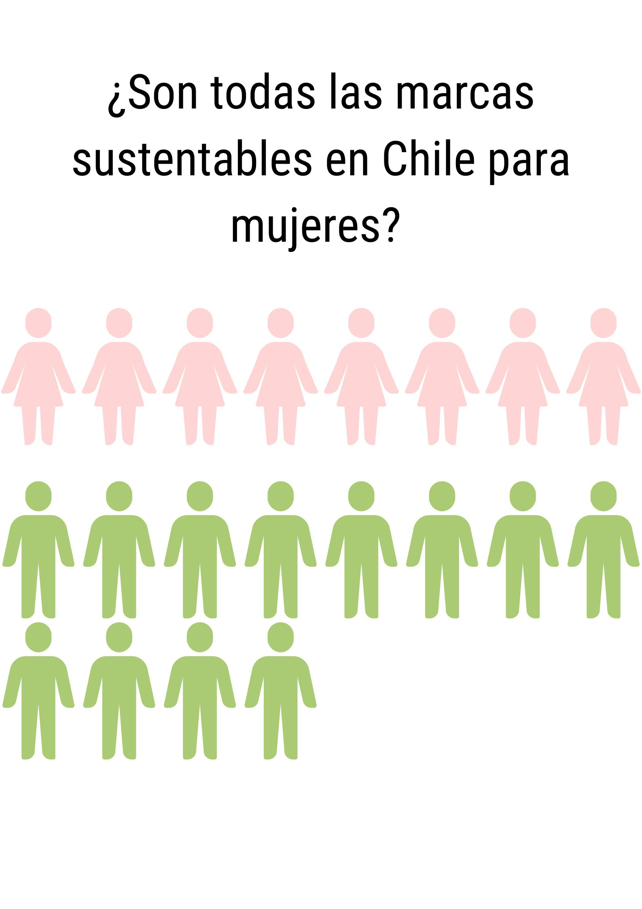

La moda siempre ha sido asociada a las mujeres, pero nosotros queremos mostrarte lo contrario. En la siguiente visualización te mostraremos la gran cantidad de marcas unisex que hay en el país.
Lo sustentable no tiene genero. Analizamos las 20 marcas de ropa sustentable en Chile más conocidas y nos dimos cuenta que gran parte de ellas son unisex.